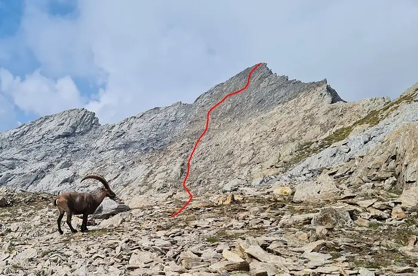
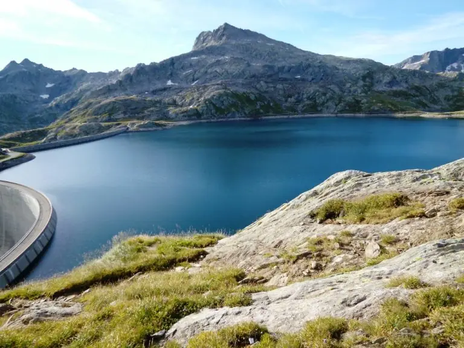
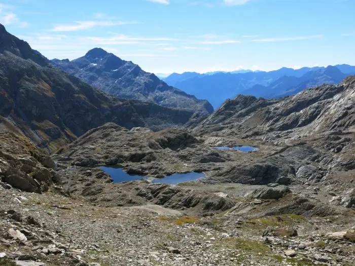
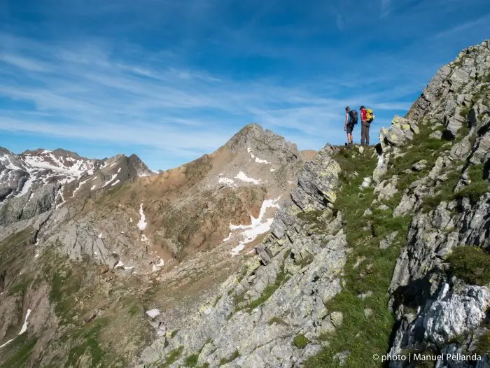

Cima di Lago (2832 m)
Gipfel mit herrlicher Aussicht, auch für trittsichere Kinder ideal: Steinbockbegegnungen sind wahrscheinlich.
- Länge
- 4 km
- Höhendifferenz
- +300 m
- Zeit
- 1 h
- Schwierigkeit
- T4
Fünf mittelschwere Routen, von der Cima di Lago bis zur Via Idra, mit der Hütte als Stützpunkt oder Etappe.

Wer die wunderbare Gegend am Cristallina mit ihren Bergseen und der Tierwelt des Hochgebirges entdecken möchte, findet hier mittelschwere, nicht zu lange Routen, die bei der Hütte beginnen oder sie als Etappe nutzen.

Gipfel mit herrlicher Aussicht, auch für trittsichere Kinder ideal: Steinbockbegegnungen sind wahrscheinlich.
Der Hauptgipfel inmitten einer Reihe von Bergseen; auf dem Gipfel steht noch das Rifugio Camosci, letzter Zeuge der Kriegszeit in der Gegend. Im letzten Hang auf Steinschlag achten, wenn andere unterwegs sind; das Biwak nur mit grosser Vorsicht betreten, Absturzgefahr.

Klassische, leichte Runde auf weiss-rot-weissem Weg rund um den Gipfel des Cristallina. Auch als Tagestour ab Robiei oder vom Narèt-Pass, mit Mittagessen in der Hütte.

Der Sentiero Cristallina Nummer 59 ist eine klassische dreitägige Durchquerung von Bignasco im Maggiatal nach Airolo.

Die erste Etappe der Via Idra, vom Nufenenpass nach Airolo mit Übernachtung in der Hütte. Höhepunkt ist der Aufstieg durch den Canale del Becco, mit Seilen und Tritten gesichert: am besten im Aufstieg begehen, auf Steinschlag und Schnee zu Saisonbeginn achten.